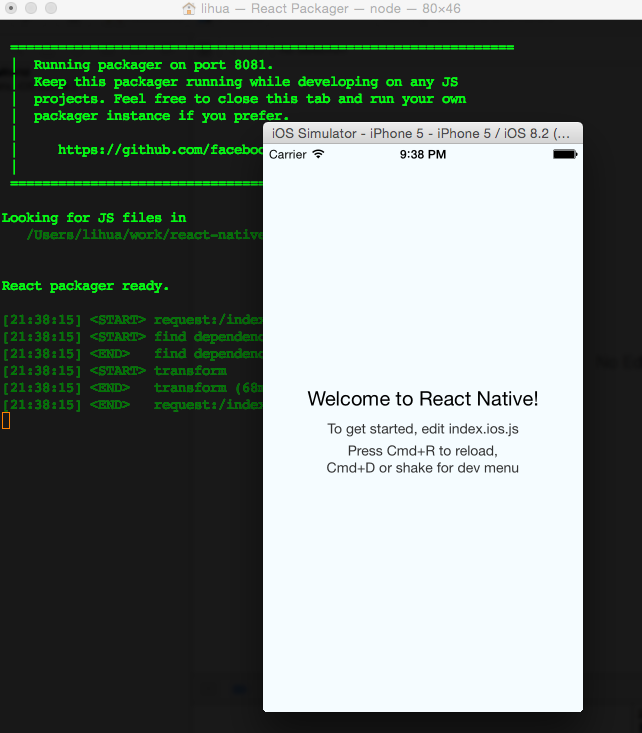
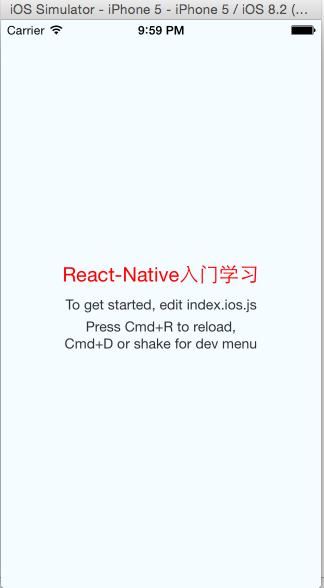

最近手头的工作繁多，有研究性的项目和系统研发，又遇到同事离职，接手了框架的UI组件，不仅需要维护和填坑，还需要开发新的功能组件。因为身在H5-Hybird的框架部门，最近团队开始尝试使用React-Native来做些东西。之前也有过开发iOS App的冲动，学了点Object-c,这次正好借此机会进入App开发，以弥补自己在Native-App上的经验不足。
(1)需要一台Mac(OSX),这个是前提，建议还是入手一本啦。
(2)在Mac上安装Xcode,建议Xcode 6.3以上版本
(3)安装node.js:https://nodejs.org/download/
(4)建议安装watchman，终端命令：brew install watchman
(5)安装flow：brew install flow
ok，按照以上步骤，你应该已经配置好了环境。
现在我们需要创建一个React-Native的项目，因此可以按照下面的步骤：
打开终端，开始React-Native开发的旅程吧。
(1)安装命令行工具：sudo npm install -g react-native-cli
(2)创建一个空项目：react-native init HelloWorld
(3)找到创建的HelloWorld项目,双击HelloWorld.xcodeproj即可在xcode中打开项目。xcodeproj是xcode的项目文件。
(4)在xcode中，使用快捷键cmd + R即可启动项目。基本的Xcode功能可以熟悉，比如模拟器的选择等。
启动完成后，你会看到React-Packger和iOS模拟器，具体的效果如下，说明你创建项目成功了。

Xcode里面的代码目录结构暂时不用管了，打开HelloWorld项目文件夹，找到index.ios.js文件。
index.ios.js文件就是React-Native JS 开发之旅的入口文件了。 先来个感性的认识，修改一
些文本，下一篇会解读里面的代码。用文本编辑器打开index.ios.js文件。
（1）找到代码<Text></Text>部分：
<Text style={styles.welcome}>
Welcome to React Native!
</Text>
修改成如下：
<Text style={styles.welcome}>
React-Native入门学习
</Text>
（2）找到代码
welcome: {
fontSize: 20,
textAlign: 'center',
margin: 10,
},
修改成如下：
welcome: {
fontSize: 20,
textAlign: 'center',
margin: 10,
color: 'red',
},
(3)有web开发经验的你，上面的修改你一定会体会到些什么。点击模拟器，cmd + R,刷新视图,会看到如下截图：

如果有过web开发经验的你，一定觉得很容易理解和学习React-Native，所以这一小步也是一大步
（1000步）。千里之行，始于此步。